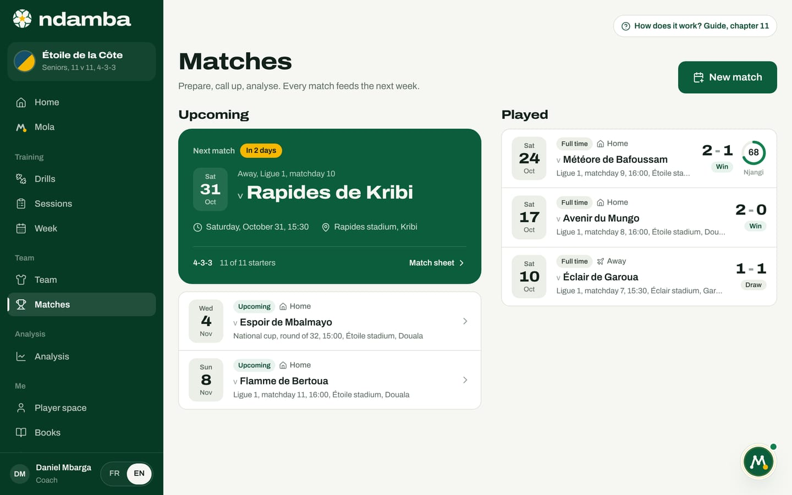
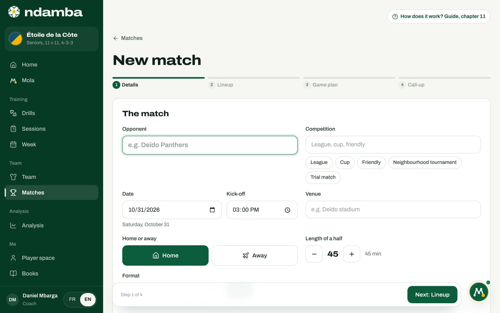
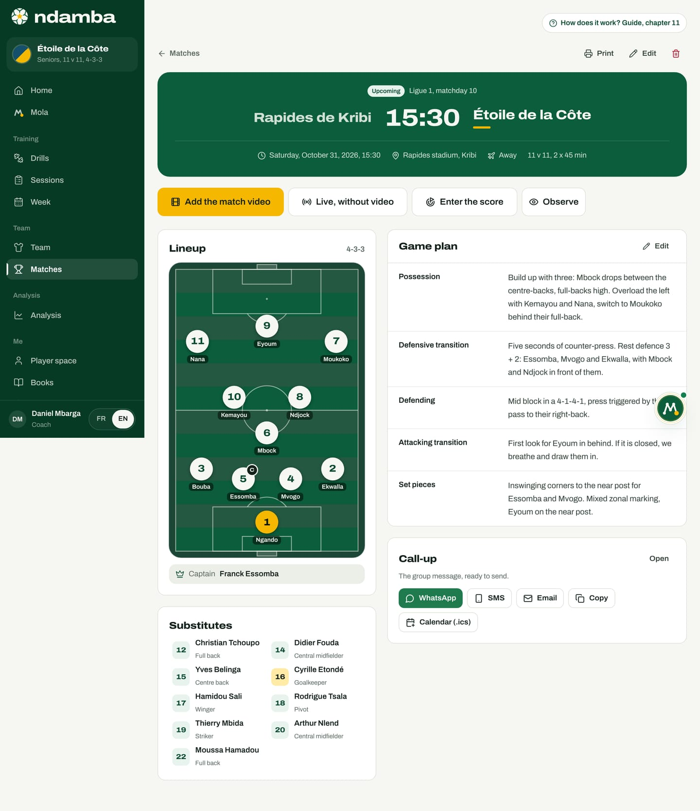
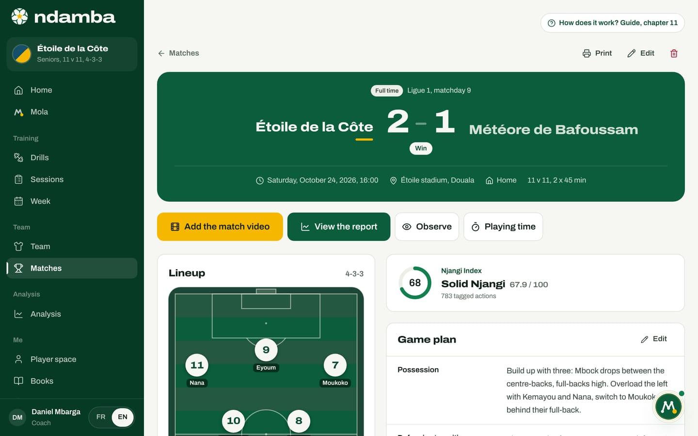

Prepare a match
The matches list, setting up a match in four steps (details, lineup, game plan, call-up), the match sheet before and after the game, and the call-up that Mola drafts and you approve.
10 min read
In many teams, a match gets prepared in pieces: the lineup on a scrap of paper, the game plan in the coach’s head, the call-up typed late at night into the WhatsApp group. Ndamba gathers those pieces onto one sheet per match. That sheet then serves at kick-off, for live analysis, and after the final whistle, for the report and each player’s playing time. Prepare, call up, analyse: every match feeds the next week.
The matches list
Open Matches in the menu, or in the bottom bar on a phone. The page has two columns and a New match button.


Upcoming opens with a large green card, the Next match. It shows when it is (Today, Tomorrow or In 2 days, for example), Home or Away, the competition, the date, the time, the venue, the formation and how many starters are already in place. Tap it to open the Match sheet. The other upcoming matches follow as a list.
Played lists finished matches, most recent first, with the Full time status, the score (the home side on the left), the result (Win, Draw or Loss) and, if the match was tagged, a dial with the Njangi Index. A planned match whose date has passed without being finished also appears here, marked Score missing. A match being tagged right now is marked Live.
Set up a new match
Tap New match. Preparation takes four steps: Details, Lineup, Game plan and Call-up. The bar at the top shows where you are; tap any step to jump to it. At the bottom, Previous and Next (for example Next: Lineup) guide you, and the last step ends with Save the match. Only the opponent is required: without it, Ndamba takes you back to the first step with the message "Enter the opponent to continue."
Step 1: the details


- Opponent: the name of the other team.
- Competition: type it, or tap a suggestion: League, Cup, Friendly, Neighbourhood tournament, Trial match.
- Date and Kick-off: Ndamba suggests the coming Saturday at 3 pm; change them if needed.
- Venue: the stadium or pitch.
- Home or away: tap Home or Away.
- Length of a half: 5 to 60 minutes, in steps of 5. By default, 45 minutes at 11 v 11, 30 minutes at 8 v 8 and 9 v 9, 20 minutes at 5 v 5 and 7 v 7.
- Format: 5 v 5 up to 11 v 11. Changing the format adapts the formation and the lineup.
Step 2: the lineup
Ndamba arrives with a lineup already made, in the team’s base formation. The top of the step offers the formations available for the chosen format:
| Format | Formations offered | Default |
|---|---|---|
| 11 v 11 | 4-3-3, 4-2-3-1, 3-4-3, 4-4-2, 3-5-2 | 4-3-3 |
| 9 v 9 | 3-3-2, 3-2-3 | 3-2-3 |
| 8 v 8 | 3-3-1, 2-3-2 | 3-3-1 |
| 7 v 7 | 2-3-1, 3-2-1, 3-1-2 | 2-3-1 |
| 5 v 5 | 1-2-1, 2-2 | 1-2-1 |
The pitch reads from bottom to top: your goal at the bottom, attacking upwards. To change a player:
- Tap a position on the pitch. A window opens, for example Position: Full back.
- At the top, Best fits for this position; below, Other players. Each name shows its situation (starting in another position, Substitute, Not selected or In this position) and its level bar.
- Tap a player. If they were starting elsewhere, the two swap places. If they were a substitute or not selected, they take the position and the previous starter goes to the bench.
- To empty a position, tap Leave the position empty.
The Pick automatically button rebuilds the whole lineup: each player goes to the position that suits them best, and skills settle any ties. Changing formation keeps your choices as far as possible: a player stays in place if the position still exists, otherwise slides to the closest position, or to the bench.
Below the pitch, three blocks complete the squad. Captain: tap a starter to give them the armband (Ndamba first suggests the player with the highest average level). Substitutes: the cross removes a player from the squad. Not selected: tap a name to add them to the substitutes. A counter keeps the total, for example "11 starters, 9 substitutes".
Step 3: the game plan
The game plan follows the four moments of the game, plus set pieces: Possession, Defensive transition, Defending, Attacking transition and Set pieces. Each moment asks its question, for example "What do we do in the seconds after losing the ball?". Write freely, or tap the Njangi ideas offered under each field: an idea you tap is added on a new line, and tapping it again removes it. For the defensive transition you will find, for example, "Five seconds of counter-press" or "Rest defence 3 + 2". The screen’s advice holds for everyone: one or two clear ideas per moment beat a page of instructions.
Step 4: the call-up
Ndamba drafts the group message: the team name and the opponent, the date, time and venue, the list of starters (Starting) and substitutes (Subs), the request to arrive 45 minutes before kick-off with both kits, water and shin pads, a request to reply, and the motto "The ball must travel. But it must know where it is going."
As long as you do not touch the text, it follows the lineup: change a player in step 2 and the message updates. If you edit it, Message edited by hand appears, and Rebuild the message goes back to the automatic text. Five buttons under the message send it: WhatsApp opens WhatsApp with the text ready (you pick the group), SMS and Email open your apps, Copy puts it on the clipboard, and Calendar (.ics) downloads a file to open in your calendar, with the message as its description. Alongside, a preview shows the match poster and the lineup.
Finally, tap Save the match. The match sheet opens.
The match sheet, before kick-off


At the top, Matches takes you back to the list, Print produces a clean sheet (poster, lineup, squad list with the captain marked "(C)", game plan and motto), Edit reopens the four steps under the title Edit match, and the bin deletes the match: its lineup and tagged actions are erased from this device.
The green plate shows the status (Upcoming), the competition, both teams (the home side on the left), the time, the date, the venue, Home or Away, the format and the duration ("2 x 45 min"). The buttons follow. Add the match video, in gold, is the recommended path: after the match, it opens the form where you paste the video’s YouTube or Facebook link (or choose the file), then the studio where you tag the match (chapter 12); once the video is added, it becomes Code the video. Live, without video opens the touchline tagger, for a match that will not be filmed; it becomes Resume live coding while the match is in play. Enter the score is for a match you will not tag, and Observe opens the chapter 10 screen with the match’s starters and substitutes.
Below: the Lineup on the pitch, with the Captain; the Substitutes, each leading to their file; the Game plan, with Edit (or Write the game plan if it is empty); and the Call-up card, "The group message, ready to send", with Open to read it again and the same send buttons.
The call-up that Mola drafts
Mola can prepare the call-up for you. In the chat, type "Send the call-up", or tap the suggestion with the same words. Mola takes the next match (or the one whose opponent you name), uses the saved lineup, drafts the message, then stops. The task’s steps say so: "Waiting for your approval before opening anything".
The Waiting for your approval card then appears:
- Send with: choose WhatsApp, SMS, E-mail or Copy.
- Number (optional), or E-mail address (optional) and Subject for an e-mail.
- Message: read the text; Edit makes it editable, Done closes editing.
- Tap Approve and open WhatsApp (or the button for the channel you chose). Ndamba opens your own app with the message ready: you choose the group and press Send. Cancel drops the task, and nothing leaves the app.
The same card waits in Mola, under the To approve tab, until you decide. When the next match is four days away or less and no call-up has been prepared yet, Mola suggests it on its own under Mola noticed, with a Yes, draft it button.

If you edited the text by hand in the Call-up step, Mola uses your version, exactly as the match sheet does. Otherwise it drafts the message from the saved lineup. One detail to watch: a text edited by hand no longer follows the lineup. If you change players afterwards, reopen the match with Edit and tap Rebuild the message in the Call-up step.
After the match
Once the match is over, the sheet changes. The plate shows the score in large type and the result (Win, Draw or Loss). The buttons become Add the match video (or Code the video), View the report (chapter 13), Observe and Playing time: the video can be added days after the match. If the match was not tagged, Correct the score stays available. The call-up card disappears.


For a tagged match, on the video or live, a Njangi Index card shows the dial, the rating (Solid Njangi, for example), the value out of 100 and the number of tagged actions; it opens the report.
For a match you did not tag, Enter the score opens the Final score window: set both scores with the plus and minus buttons, then Save the score. The match moves to Full time.
Playing time opens the list of starters and substitutes. Set each player’s minutes with the minus 5 and plus 5 buttons, or type the number, then tap Save playing time. Without an entry, a starter counts the whole match and a substitute zero, even if they came on. These minutes feed each player’s journey: matches played, minutes, first match and first starts (chapter 10). A few minutes after each match are enough to keep every player’s season accurate.
A match week, in order
- As soon as the match is known, create it with New match, or ask Mola. The match date is also used by the week planner (chapter 9).
- During the week, adjust the lineup and the game plan with Edit: injuries, absences, ideas from training.
- One or two days before, send the call-up, from the match sheet or through Mola, once the bench has been checked.
- On match day, have the match filmed with a phone set up high (chapter 12). With no camera, tap Live, without video at kick-off.
- After the match, put the video on YouTube as "unlisted" or on Facebook, tap Add the match video and tag it. Save the Playing time, open View the report and note what to work on the following week (chapter 13).